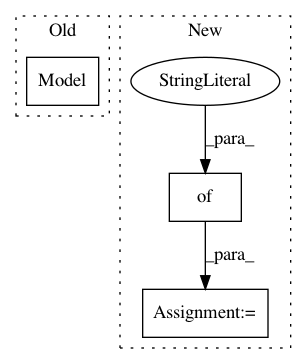

c94623ad0dac5fa5ce7a9a3c4ecb794351ebc610,tests/python/frontend/tflite/test_forward.py,,_test_relu,#Any#Any#,2870
Before Change
pytest.skip("Testcase requires tflite version >= 2.1.0")
data_in = tf.keras.layers.Input(shape=data.shape[1:])
relu = tf.keras.layers.ReLU()(data_in)
keras_model = tf.keras.models.Model(inputs=data_in, outputs=relu)
input_name = data_in.name.split(":")[0]
// To create quantized values with dynamic range of activations, needs representative dataset
def representative_data_gen():
After Change
inq_data = tf.quantization.fake_quant_with_min_max_args(
in_data, min=-10, max=10, name="inq_0"
)
input_range = {"inq_0": (-10, 10)}
out = nn_ops.relu(inq_data)
out = tf.quantization.fake_quant_with_min_max_args(out, min=0, max=6, name="out")
compare_tflite_with_tvm(
data, "inq_0:0", [inq_data], [out], quantized=True, input_range=input_range
In pattern: SUPERPATTERN
Frequency: 3
Non-data size: 3
Instances
Project Name: apache/incubator-tvm
Commit Name: c94623ad0dac5fa5ce7a9a3c4ecb794351ebc610
Time: 2020-10-29
Author: anshuman.t@huawei.com
File Name: tests/python/frontend/tflite/test_forward.py
Class Name:
Method Name: _test_relu
Project Name: philipperemy/keras-tcn
Commit Name: 0cfe82c6beb9a28a5ff7da81b86fa0e93c388f14
Time: 2019-11-20
Author: premy@cogent.co.jp
File Name: tasks/save_reload_model.py
Class Name:
Method Name:
Project Name: arviz-devs/arviz
Commit Name: 378e65a8aa8f0be4e1b9e1c1c0e2e1c85bf12271
Time: 2018-09-08
Author: ravinsdrive@gmail.com
File Name: examples/pairplot.py
Class Name:
Method Name: